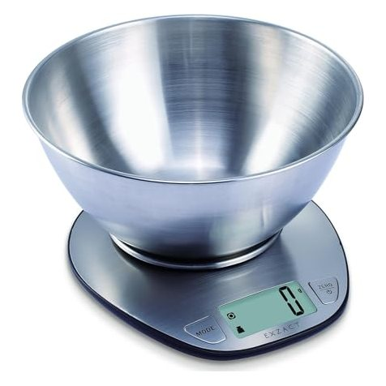
Reference image: EXZACT · Amazon.de (via testbedarf.de). Shows the product type, not the Chinese maker's product.
Digital kitchen scale (5 kg / 1 g, stainless steel or bamboo, USB-C)
Flat kitchen scale up to 5 kg with 1 g resolution, large LCD and auto power-off - small, light and ideal as an add-on.
Specifications
| Capacity / resolution | 5 kg / 1 g (strain gauge sensor) |
|---|---|
| Material | Stainless steel + ABS (model GKS1569); bamboo variant at Aemaxx (SKS-20322U) |
| Display | LCD 54 x 21 mm |
| Units | g, lb:oz, oz, ml switchable |
| Power supply | GKS1569: battery; ask for USB-C rechargeable variant (Aemaxx SKS-20322U: USB charging) |
| Functions | Auto power-off, low battery indication |
| Certificates per supplier | Product: CE, RoHS; company: LFGB, FCC, PAHs, REACH |
| Packaging | 20 pcs per carton |
Internal
Details & contact
Listed on Made-in-China as Manufacturer/Factory & Trading Company in Port Town, Zhongshan (Guangdong), Visit My Factory, Audited Supplier; per storefront RoHS, CE, LFGB, FCC, PAHs and REACH approvals and a factory audit by BSCI, QMI and an ISO 9001 auditor (supplier statements, reports not yet seen).
Alternative manufacturers (1)
Made-in-China storefront with Visit My Factory and 360-degree tour, Audited Supplier; bamboo kitchen scale SKS-20322U (USB charging, 5 kg) with CE claim, US$10.49 from 1,000 pcs. Business type is not shown on the page, office address in Tianhe (Guangzhou).
More
(Princess Pure Bambus from EUR 12.90 per testbericht.de) are in the EUR 12-19 range. A USB-C model is not evidenced in the German price comparison. Amazon price per testbedarf.de (as of 10/26), not checked directly.
- Landed cost
- €2.00
- Selling price (net)
- €14.28
- Margin
- €12.28 · 86.0%
- Target price China
- €9.13
- Saving vs. buying in Germany
- 88.1%
- Minimum order
- 500 pcs
- Price basis
- Listing
per unit, net. China prices are list prices (not negotiated). Freight, duty and handling are assumptions; import VAT is deductible as input tax. Assumptions: freight by product group, 3 % handling, selling 15 % below the German market price, target margin 25 %.
Description
The kitchen scale weighs up to 5 kg in 1 g steps using strain gauge sensors, shows the result on a large LCD and switches off automatically.
More
Buyers expect a flat, easy-to-clean platform (stainless steel or bamboo), switchable units (g, oz, lb, ml), overload and battery indicators and, on premium models, USB-C recharging instead of disposable batteries. For EU sale, CE (EMC), RoHS, ElektroG registration and - where the platform contacts food - LFGB must be evidenced; the scale must not be advertised as legal-for-trade (calibrated) unless a type examination under Directive 2014/31/EU exists.
Customs
| Tariff code | 84231010 |
|---|---|
| Duty rate | 1.7 % |
Standards & marks (Germany/EU)
2014/30/EU (EMC)Electromagnetic compatibility (CE)RoHS 2011/65/EURestriction of hazardous substances in electrical equipmentElektroG / BattG / (EU) 2023/1542Registration with stiftung ear; battery rules (incl. UN 38.3 for USB-C battery)(EC) 1935/2004 / LFGBFood contact of the weighing platform (stainless steel/bamboo)2014/31/EU (NAWID)Non-automatic weighing instruments: only for legal-for-trade use; do not advertise a household scale as legal-for-tradeGPSR (EU) 2023/988Product safety: EU responsible person, traceability
Internal · notes
E-commerce potential
Testbericht.de (10/2026) lists 1,103 kitchen scales with 11,667 opinions (avg. 4.4); top models such as Beurer KS25 (from EUR 18.90), Soehnle Page Compact 300 …
More
(from EUR 11.75) and Princess Pure Bambus (from EUR 12.90) sit at EUR 12-19, the range runs from EUR 7.99 to EUR 157.08. On testbedarf.de/Amazon (10/26) the stainless steel scale EXZACT costs EUR 19.99 and a Retoo scale with bowl EUR 9.99. Small, light parcel but strong competition (per scan Salter 40, ADE 36, Steinberg Systems 25 products) and a price-driven market; differentiate via stainless steel/bamboo look, USB-C and design.
Request from the supplier
- Fix the configuration (stainless steel/bamboo, battery or USB-C, size): GKS1569 is a battery model; request the USB-C or bamboo variant separately.
- Accuracy test with reference weights (1 g, 100 g, 1 kg, 5 kg): repeatability, drift, temperature behaviour; fix tolerance in writing.
- Request CE/EMC report and RoHS report; for a USB-C battery additionally UN 38.3 and battery compliance.
- Request LFGB/1935 report for the platform (stainless steel or bamboo with lacquer/sealing).
- Do not market as legal-for-trade; clarify German labelling, EU responsible person (GPSR) and ElektroG registration before sales start.
- Request the factory audit (BSCI, QMI, ISO 9001 per storefront) as valid reports.
Sources
Price per scale, tiers US$2.20 / 2.00 / 1.90; sample price US$3. The listing is a battery model (stainless steel + ABS, 5 kg / 1 g); the USB-C rechargeable variant is not listed and must be quoted separately. Bamboo alternative Aemaxx SKS-20322U with USB charging: US$10.49 (from 1,000 pcs), US$9.56 (from 5,000 pcs).
Goes well with
Accessories, consumables and products that sellers sell together with this item.
More products in this category
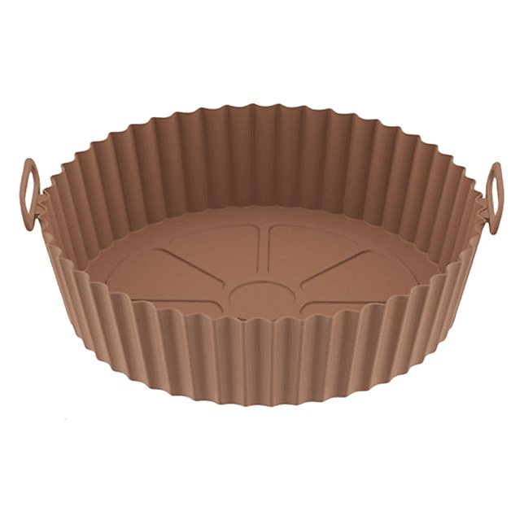
Trend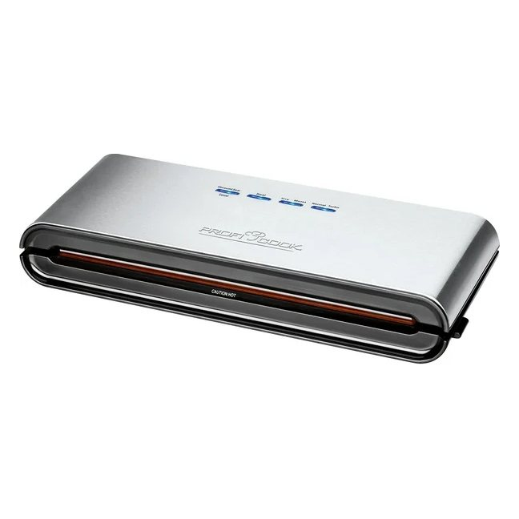
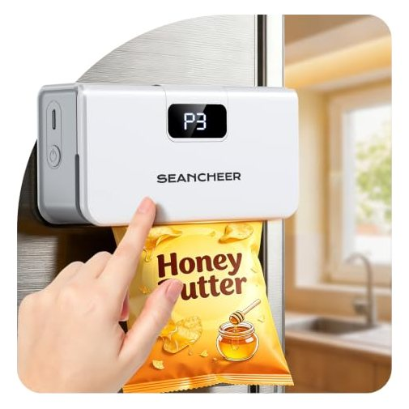
Trend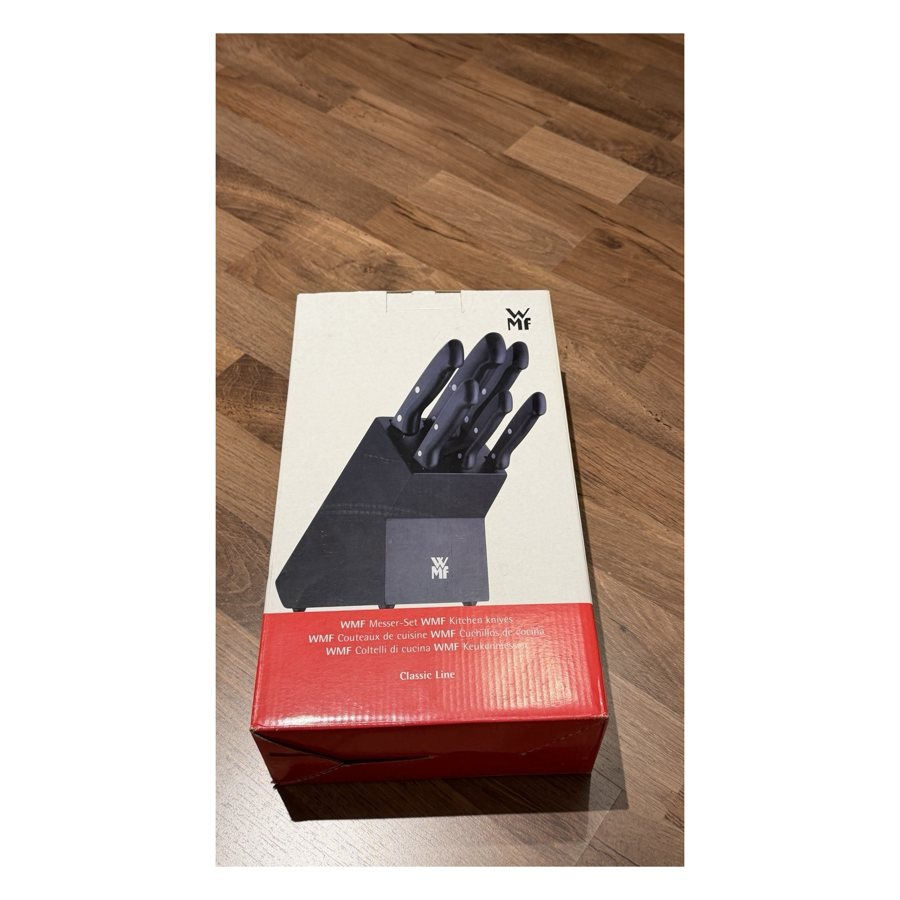
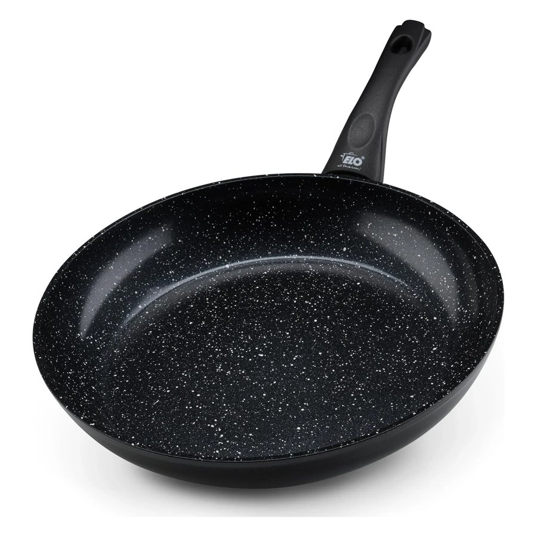
Trend
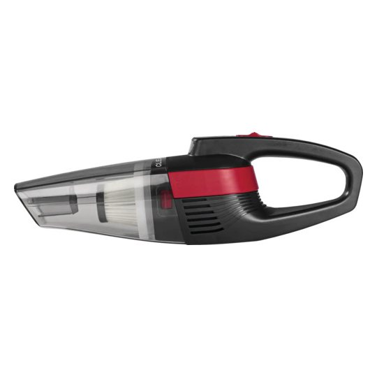
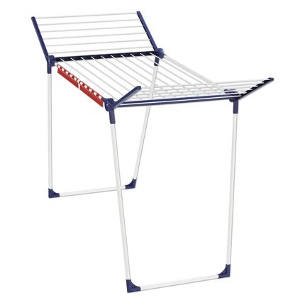
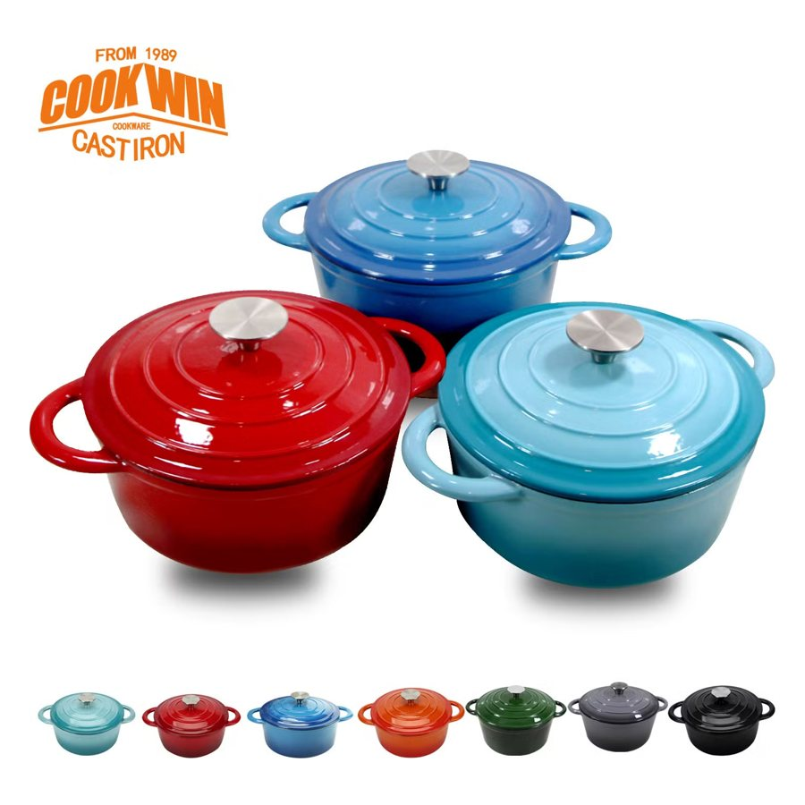
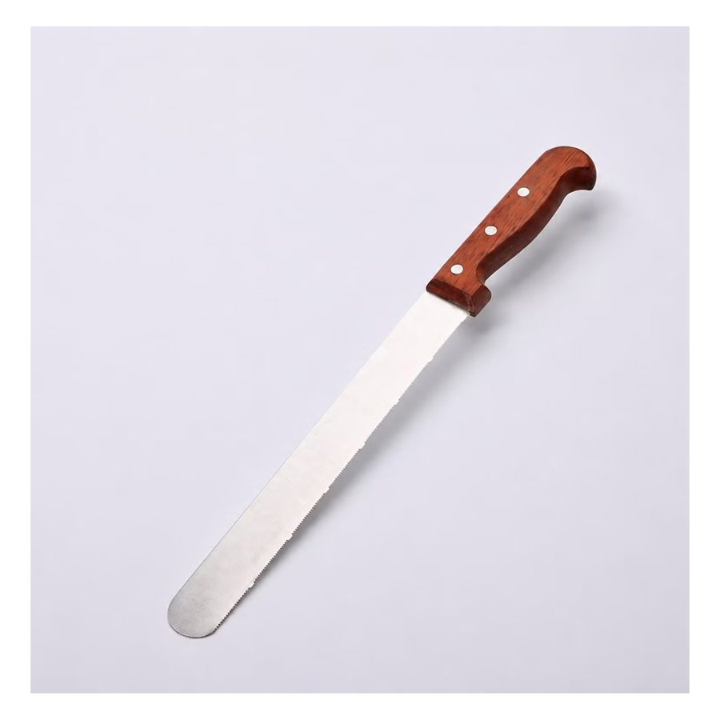
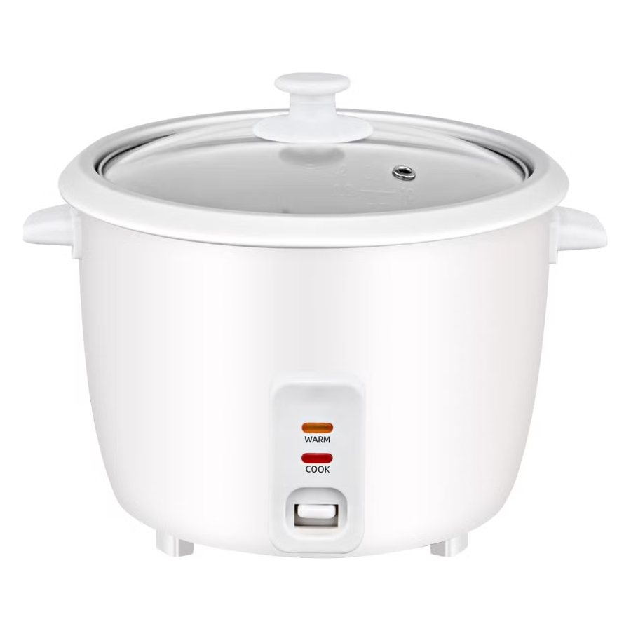
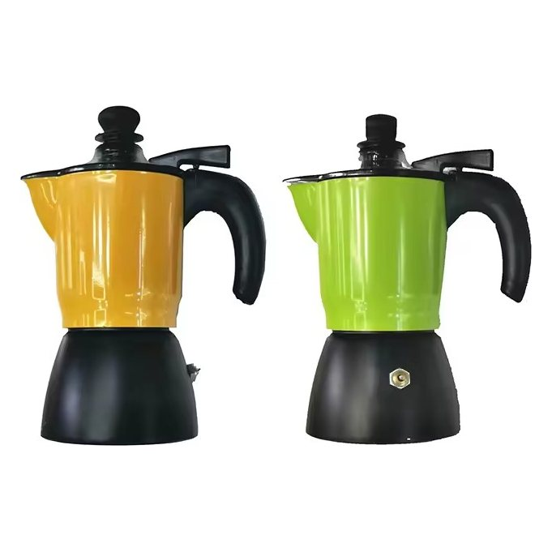
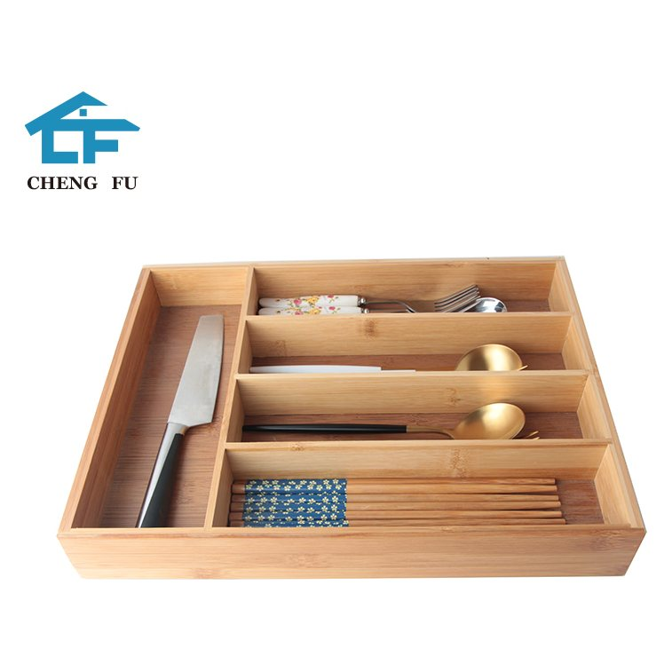
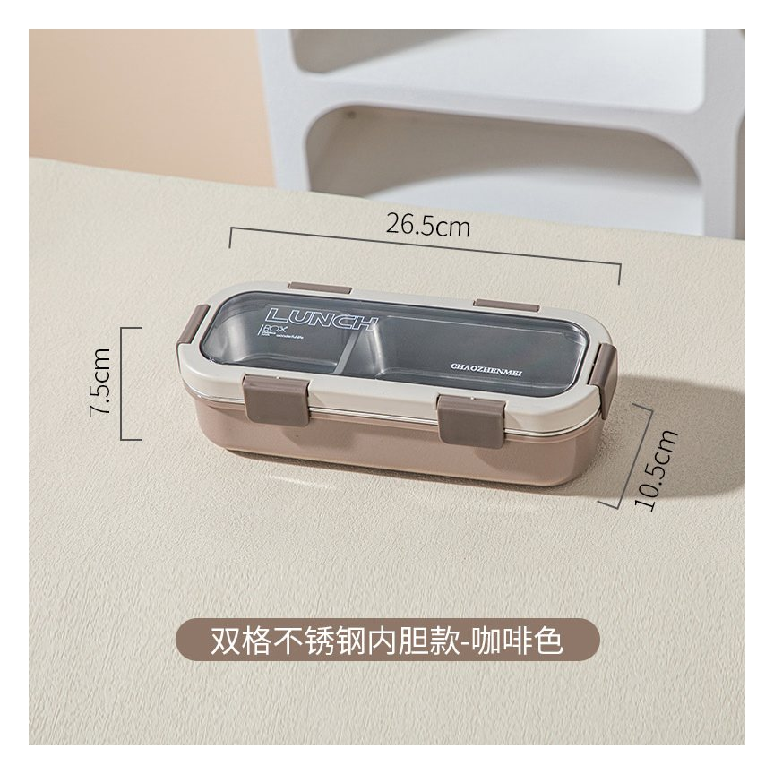
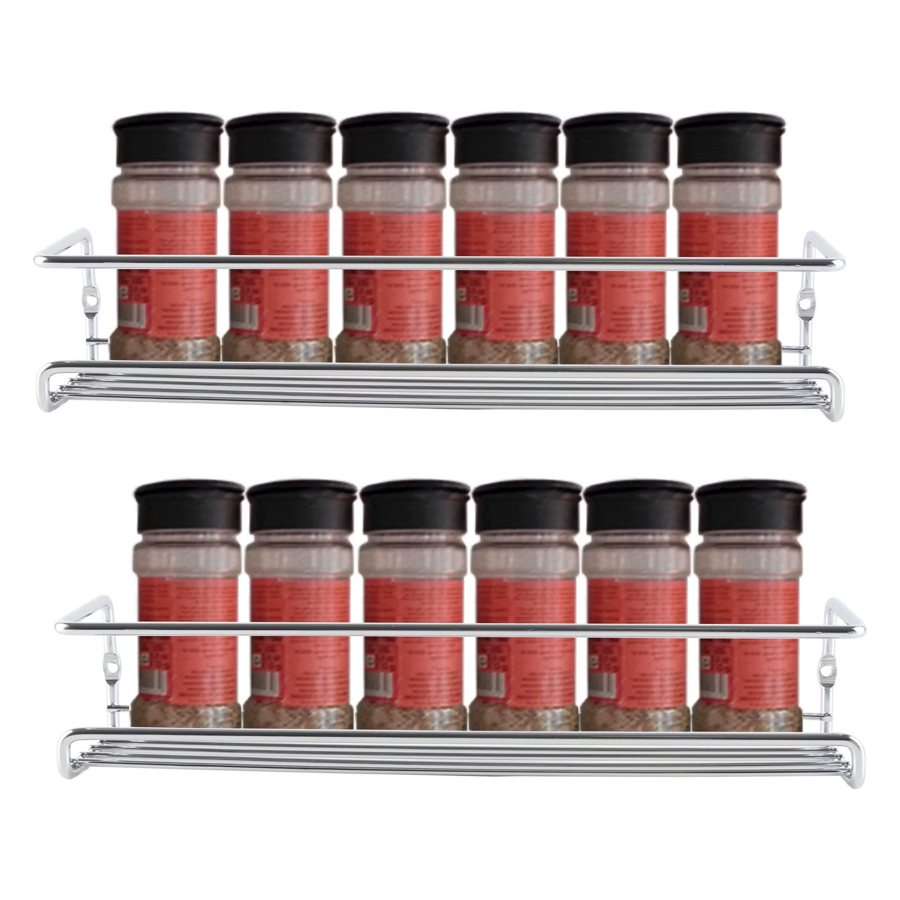
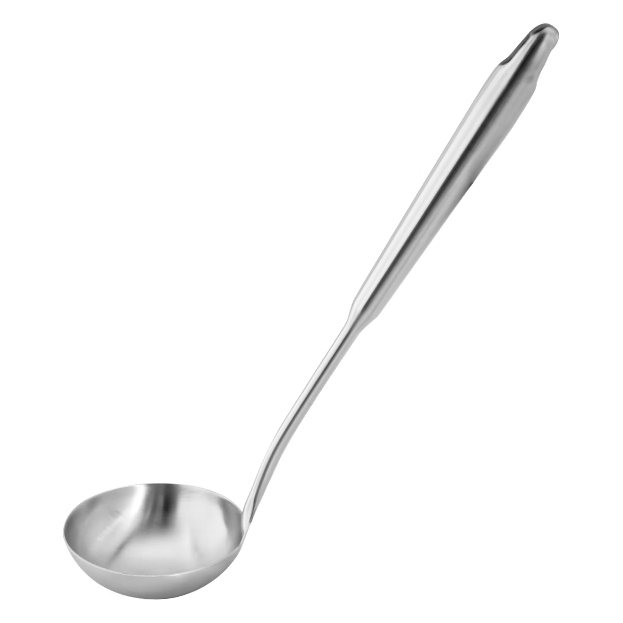